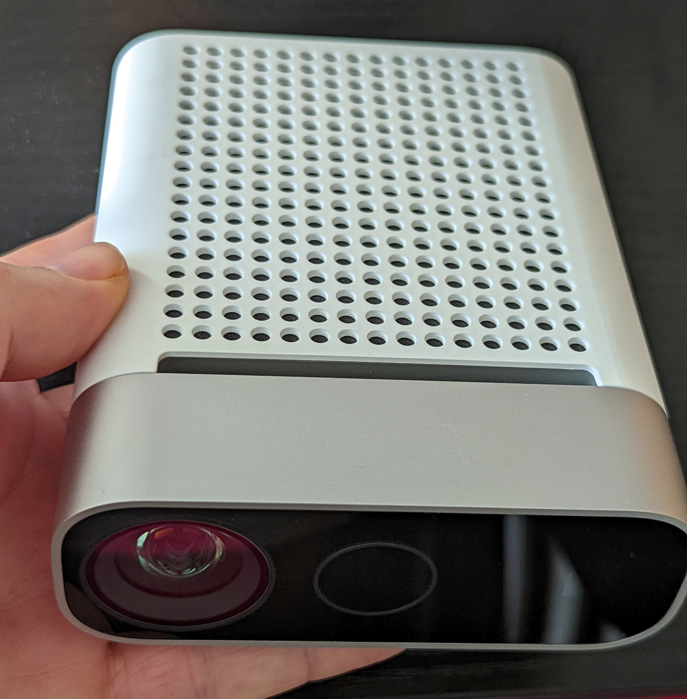
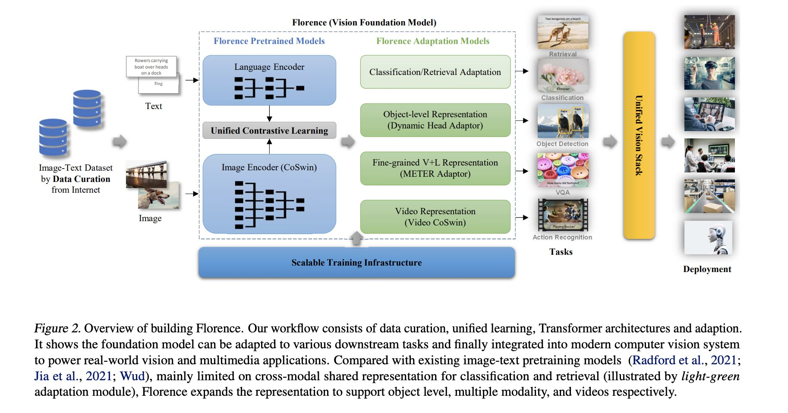

# Stand der Kunst in der Bilderkennung Oliver Zeigermann https://djcordhose.github.io/ml-resources/2022-ods.html
### Agenda 1. Vergangenheit: Klassische Bilderkennung 1. Gegenwart: Deep Learning 1. Zukunft: Transformers und Co
### Agenda 1. _Vergangenheit: Klassische Bilderkennung_ 1. Gegenwart: Deep Learning 1. Zukunft: Transformers und Co
### Beispiel: Wie kann man diese beiden Arten automatisch unterscheiden? Gleiche Form, gleiches Material
## Feature Extraction ### Unterschiedliche Größe * es gibt Verfahren, die Kreise zuverlässig erkennen können * das bekannteste Verfahren ist die Hough-Transformation * anhand der Größe der Kreise könnten wir den Unterschied ablesen
### Die Parameter sind Gefummel, aber mit ein bisschen Erfahrung bekommt man das hin ``` aperture = 21 img_gray_blur = cv.medianBlur(img_gray, ksize=aperture) threshold_canny_edge_detector = 100 threshold_circle_centers = 30 circles = cv.HoughCircles( image=img_gray_blur, method=cv.HOUGH_GRADIENT, dp=1, minDist=rows/8, param1=threshold_canny_edge_detector, param2=threshold_circle_centers, minRadius=0, maxRadius=0) ``` https://docs.opencv.org/4.x/d4/d70/tutorial_hough_circle.html
### Hough-Transformation <img src="data/ring/stone-top-detection.jpg"> 133 vs 150
### Aber nun... 114 vs 116
### Andere Umgebung und Schatten <img src="data/ring/wama-tilt-detection.jpg"> 145 vs 151
### Ohje <img src="data/ring/table-top-flash-detection.jpg">
### Unter Laborbedingungen ist das sehr brauchbar _Alles ist voll mit "Magic Numbers", die handgetuned werden und auf bestimme Bedingungen passen_ * Objekte mit klaren, am besten geometrische Formen (z.B. Kreise) oder aus diesen zusammengesetzt * Konstanter Hintergrund, der sich klar vom zu erkennenden Objekt abhebt * Konstante Lichtquelle * Konstante Kamera mit * Konstanter Entfernung, Winkel und Brennweite * Generell möglichst konstante Umgebung beim erstellen der Fotos (kein Staub, Sonnenlicht, etc.) _Aber für die freie Wildbahn eine große Herausforderung_
### Python-Werkzeuge für klassischen Bilderkennung * OpenCV * https://docs.opencv.org/4.x/ * https://pypi.org/project/opencv-python/ * scikit-image * https://scikit-image.org/
### Wichtigste Techniken der klassischen Bilderkennung * Faltungen (Blur/Sobel/Sharpen): https://docs.opencv.org/4.x/d4/d13/tutorial_py_filtering.html * Edge-Detection: https://docs.opencv.org/4.x/da/d22/tutorial_py_canny.html * Morphologische Operationen (Opening/Closing): https://docs.opencv.org/4.x/d9/d61/tutorial_py_morphological_ops.html * Konturen und Bounding Boxes: https://docs.opencv.org/4.x/d3/d05/tutorial_py_table_of_contents_contours.html * Segmentierung: https://docs.opencv.org/4.x/d3/db4/tutorial_py_watershed.html https://docs.opencv.org/4.x/d2/d96/tutorial_py_table_of_contents_imgproc.html
### Agenda 1. Vergangenheit: Klassische Bilderkennung 1. _Gegenwart: Deep Learning_ 1. Zukunft: Transformers und Co
### Manche Sachen kann man nicht erklären, sondern nur zeigen Im Mittelalter wussten Künstler zwar von der Existenz von Elefanten, aber sie konnten sich nur auf die Beschreibungen von Reisenden stützen <img src='img/elephants/RUwdSMK.jpeg' class="fragment"> <small>https://imgur.com/gallery/MpRBy </small>
### Machine Learning <!-- _Ein Ansatz zur Entwicklung von Software, bei dem die Software nicht von Hand geschrieben wird, sondern die Maschine auf der Grundlage gegebener Beispiele und Rahmenbedingungen herausfindet, was zu tun ist_ --> ein Ansatz zur *Entwicklung von Software*, bei dem man nicht von Hand Regeln schreibt, sondern *die Maschine herausfinden lässt*, was zu tun ist Grundlage dafür * eine *Metrik* für das Maß des Erfolgs, * *Beispieldaten* * *Rahmenbedingungen*
### Machine Learning auf manuellen Features Wir extrahieren manuell Merkmale und trainieren damit einen Klassifikator * Wir könnten eine ganze Reihe von Features aus unseren Bildern extrahieren * Das erste könnten die Kreise sein * Kanten, Konturen und Segmente sind ebenso üblich * Diese Features kodieren wir numerisch und schicken sie in Machine Learning Algorithmen * Wir können aber auch noch abstraktere Features extrahieren wie z.B. die Größe des Rings
### Bilderkennung mit Deep Learning Wir lernen auch die Extraktion der Features * Deep Learning ist eine spezielle Form des Machine Learnings * Neuronale Netze mit vielen Schichten * Dense-Layers sind effizient über Matrix-Multiplikationen realisierbar * Training über Backpropagation * 3 Schichten mit genügend Neuronen und teilweise linearer Aktivierung (ReLU) können beliebige Funktionen approximieren * Das heißt auch theoretisch auf jede Aufgabe der Bilderkennung trainierbar
### Aber Bilder sind besonders * In Bildern hat die Nachbarschaft von Pixeln eine Bedeutung * Objekte sind miteinander verbunden * Merkmale in einem Objekt sind translationsinvariant
### Spezielle Schichten zur Bilderkennung Convolutional Neural Networks (CNNs) * wir nutzen dieses Wissen über Bilder * ein alter Bekannter: Faltungen (Convolution) * Faltungen haben sehr wenige Parameter, und sind Translations-Invariant * derselbe Filter geht über alle Teile des Bildes * Neuronale Netze können beliebige Faltungskerne lernen * Schaltet man viele hintereinander können diese Merkmale des Bildes extrahieren
### Faltungen <img src="img/setosa_io_image-kernels.png"> https://setosa.io/ev/image-kernels/
### Deep Learning mit CNNs <img src="img/vgg.png"> _beginnt mit einer Reihe von Faltungsblöcken zur Merkmalsextraktion und endet mit einem klassischen Klassifikator_
Wie spielen die Schichten zusammen?
https://transcranial.github.io/keras-js/#/mnist-cnn
### Deep Learning und Datenmenge <img src='img/Why-Deep-Learning.png' height="500"> <small> Andrew Ng: https://www.slideshare.net/ExtractConf<br> https://machinelearningmastery.com/what-is-deep-learning/ </small>
### Entscheidend sind aber fast immer die Beispieldaten <a href='https://teachablemachine.withgoogle.com/'> <img src='img/teachable-machine.png' style="height: 300px;"> </a> _Herausforderungen im Live Demo_ https://teachablemachine.withgoogle.com/
### Was muss man ins Modell hinein trainieren? Entscheidend sind die Beispieldaten * Welche realistischen Variationen gibt es? * Welche Klassen sind notwendig? * pro Objekttyp * Fragmente? * vermischte Objekttypen? * kein Objekt * ein anderes Objekt
### Bias in Image Recognition Enzo Ferrante - Fairness of Machine Learning in Medical Image Analysis Scipy 2022
### Überblick über Architekturen <img src="img/image-recognition/cnn-architecture-overview.jpeg"> https://towardsdatascience.com/neural-network-architectures-156e5bad51ba https://arxiv.org/abs/1605.07678
### Wann macht ML Sinn? _Die Lösung des vorliegenden Problems ist unbekannt oder schwer zu spezifizieren_ _Und_ * Es liegen Daten mit einer klaren, einfache Eingabe und bestenfalls auch passender Ausgabe vor * Es gibt Muster in der Eingabe, die zur Vorhersage verwendet werden können * Die Lösung des Problems kann Fehler oder Unsicherheiten tolerieren * Wir sind bereit und in der Lage, in einer initialen Phase Experimente mit offenem Ausgang durchzuführen
### Erklärbarkeit und Check gegen Overfitting <img src="img/Alibi_Explain_Logo_rgb.png" style="height:400px;"> https://docs.seldon.io/projects/alibi/en/stable/methods/Anchors.html#Images
<img src="img/alibi-anchor-squirrel.png" style="height:400px;">
### Agenda 1. Vergangenheit: Klassische Bilderkennung 1. Gegenwart: Deep Learning 1. _Zukunft: Transformers und Co_
### Object Detection Noch deutlich mehr Forschung als man sich wünschen würde <img src="img/image-recognition/kites_detections_output.jpg"> <small>https://github.com/tensorflow/models/tree/master/research/object_detection https://github.com/tensorflow/models/blob/master/research/object_detection/g3doc/tf2_detection_zoo.md </small>
## Tiefenbilder
### Intellisense D435i
### Azure Kinect 
### Aufbau mit Azure Kinect
## Transformers * Klasse von sehr großen Sprachmodellen * Auf Allgemeinheit trainiert * Meist riesige Trainingsdaten * Erfordern (momentan) zu viel Compute, um sie sinnvoll produktiv zu nutzen * Destillierte Modelle und mehr Compute ebnen den Weg in die produktive Welt
### Object Detection expressed as language problem <img src='img/transformers/pix2seq-od.jpg'> <small> https://arxiv.org/abs/2109.10852 <br> https://twitter.com/karpathy/status/1441497808897380357 <br> https://keras.io/examples/vision/mobilevit/ </small>
### An Image is Worth 16x16 Words: Transformers for Image Recognition at Scale <img src='img/transformers/vit.jpg'> <small> https://arxiv.org/abs/2010.11929 <br> https://huggingface.co/transformers/model_doc/vit.html </small>
### Unified models for Vision  <small> https://arxiv.org/abs/2111.11432 <br> https://twitter.com/ak92501/status/1462970921518514177 </small>
### GAN <img src="img/image-recognition/GAN-2017-vs-2022.jpg"> <small>https://twitter.com/rasbt/status/1548694310299787264 <br> https://arxiv.org/abs/2206.09479 </small>
## Was kommt nach GANs? # DALL-E: A chubby green squirrel on the moon https://labs.openai.com/
### DALL-E: A chubby green squirrel on the moon <img src="data/squirrels/2022/DALL-E-squirrels.png" style="height: 500px"> <br> <small> https://labs.openai.com/ </small>
<img src="data/squirrels/2022/DALL·E 2022-07-12 13.55.34 - A chubby green squirrel on the moon.png">
<img src="data/squirrels/2022/DALL·E 2022-07-12 13.59.26 - A chubby green squirrel on the moon.png">
Today, along with my collaborators at @GoogleAI, we announce DreamBooth! It allows a user to generate a subject of choice (pet, object, etc.) in myriad contexts and with text-guided semantic variations! The options are endless. (Thread üëá) webpage: https://t.co/EDpIyalqiK 1/N https://t.co/FhHFAMtLwS (https://twitter.com/natanielruizg/status/1563166568195821569?t=X_u51bmbJ33aMiY_GV9I6A&s=03)
### Zusammenfassung 1. Vergangenheit: Klassische Bilderkennung * Oft ausreichend in einem kontrollierten Umfeld * Meist nützlich als Vorverarbeitung 1. Gegenwart: Deep Learning * Wenn hohe Flexibilität erforderlich ist * Braucht viele Daten und viel Rechenleistung 1. Zukunft: Transformers und Co * Objekte in Bildern erkennen ist deutlich schwieriger und wenig ausgereift * 3D-Kameras können Tiefe als Graustufen abbilden * Transformer bieten einen neuen Ansatz, Modelle sind aber (noch) kaum praktikabel * Bilder können beinahe realistisch erzeugt werden
# Vielen Dank ## Stand der Kunst in der Bilderkennung Bleibt gern im Kontakt https://www.linkedin.com/in/oliver-zeigermann-34989773/ oliver.zeigermann@openknowledge.de Twitter: @DJCordhose Diese Folien: https://djcordhose.github.io/ml-resources/2022-ods.html